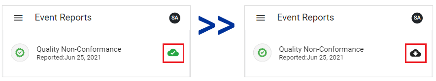

You can download an in-progress event report so it can be completed when you are not connected to the internet.
Select My Tasks or EventReports from the side menu.
On the In Progress tab, a Download button will display beside the records that can be downloaded and accessed offline. Click the button to download the record.

When the record has been downloaded, it will display in the Offline view.